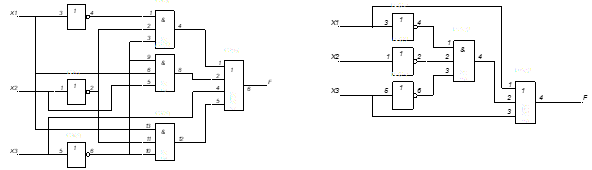
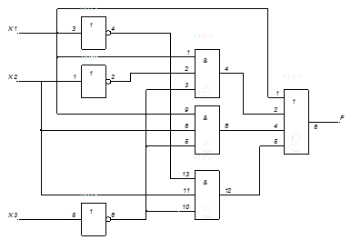

Тема: минимизация логической функции по формулам и законам алгебры логики.
Дидактическая цель: закрепить теоретические знания по основам математической логики и выработать практические навыки минимизации логической функции по формулам и законам алгебры логики.
Литература:
- Еловенко Н.А. Дискретная математика. Учебное пособие. – Волгоград. ГОУ СПО ВЭТК. 2008. Главы 2, 3.;
- О.Е. Акимов. Дискретная математика. – М. Лаборатория Базовых Знаний. 2010. 1.3.;
- Ф.А. Новиков. Дискретная математика. – С-Пб.: Питер. 2008. 3.2.;
- С.В. Яблонский. Введение в дискретную математику. – М.: Высшая школа. 2007. Глава 1 §3.
Ход занятия:
- Проверка теоретической подготовки студентов (три булевы операции: обозначение в формуле и на схеме, таблицы истинности, три вида представления логической функции).
- Инструктаж преподавателя о ходе выполнения работы.
- Выполнение работы с использованием методических указаний по вариантам.
- Подведение итогов и оценка работы каждого студента.
Порядок выполнения работы:
- Ознакомиться с примером решения.
- Решить задания, соблюдая порядок оформления примера и оформить отчет (номер, тема и цель практической работы, решение задания по варианту, вывод).
- Подготовить ответы на контрольные вопросы (устно), сделать вывод и предъявить отчет преподавателю.
Примеры решения:
1. Используя формулы и законы алгебры логики, минимизируем начальную функцию:
X1 & X 2 & X3 X1 & X2 & X3 X1 & X 2 & X3 X3 = X1& X 2 & X3 X1 & X3& (X2
X2)X3= X1& X 2 & X3 X1 & X3 X3 = X1& X 2 & X3 X1 X3
2. Составим таблицы истинности для начальной и результирующей функции. Если они совпадают, то минимизация осуществлена правильно
 Построим схемы начальной функции и результата. Если схема результирующей функции значительно меньше схемы начальной функции, следовательно, минимизация целесообразна.
Построим схемы начальной функции и результата. Если схема результирующей функции значительно меньше схемы начальной функции, следовательно, минимизация целесообразна.
 2 вариант
2 вариант
X1 & X 2 & X3 X1 & X2 & X3 X1 & X 2 & X3 X3 = X1& X 2 & X3 X1 & X3& (X2
X2)X3= X1& X 2 & X3 X1 & X3 X3 = X1& X 2 & X3 X1 X3
2. Составим таблицы истинности для начальной и результирующей функции. Если они совпадают, то минимизация осуществлена правильно

Вывод: значения начальной и результирующей функции совпадают, следовательно, минимизация выполнена верно, схема результирующей функции значительно меньше схемы начальной функции, следовательно, минимизация целесообразна.
Задание 1: минимизировать логическую функцию с помощью законов и соотношений, построить схему начальной функции и результата, заполнить таблицы истинности для исходной и результирующей функций, сравнить значения функций и сделать вывод о правильности и целесообразности минимизации:
1 вариант 2 вариант
X1 & X2 & X3 X1 X2 & X3 X1 & X 2 X3 X1 & X2 & X3
Задание 2: записать функцию по схеме, минимизировать ее с помощью законов и соотношений, построить схему результата, заполнить таблицы истинности для исходной и результирующей функций, сравнить значения функций и схемы и сделать вывод о правильности и целесообразности минимизации:
1 вариант

Контрольные вопросы:
- Описать процесс перехода из одного вида представления логической функции в другой, описать совершенные формы представления логической функции и процесс их записи, перечислить основные законы и формулы алгебры логики.